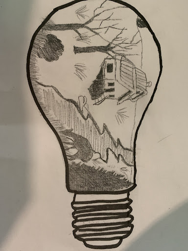
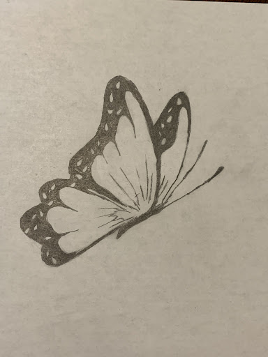
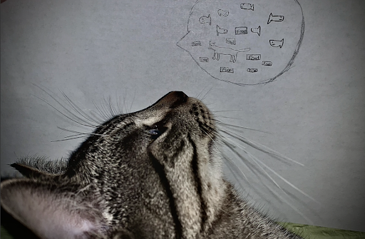
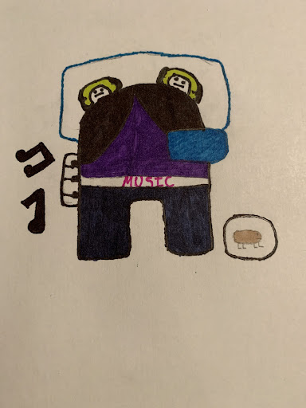
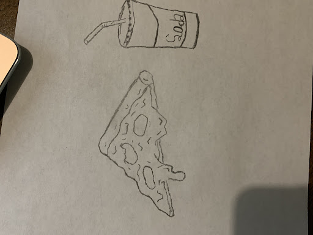

In this assignment, we were required to draw a character interacting with real-life objects.
In this assignment we had to draw in image any image of our choice. I decided to draw a cottage in the forest located near a river.
In this assignment, we were required to draw something that holds significance to us. I have always felt some kind of connection with butterflies, this is also a symbolism to my favorite song "Butterfly" by BTS, singnifying a girl who's been through many harships but she still makes it out at the end.
In this assignment, we had to utilize a real thing and make it interact with the drawing. I decided to feature my cat dreaming about treats and food.
During this time, the game Among Us was extremnemly popular, so we decided to add this towards our art class. We added qualities about ourselves, in order to make the character like us. I even added a hamster because I had a hamster at the time.
In this assignment, we were required to draw a meal, I decided to draw a pizza and a soda becuase I was really into that during this era.